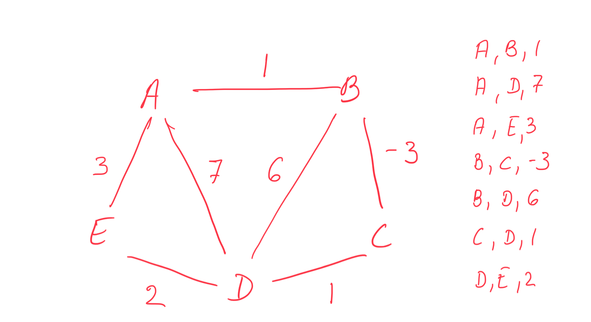
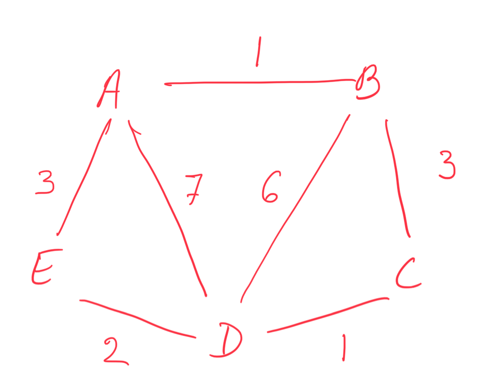
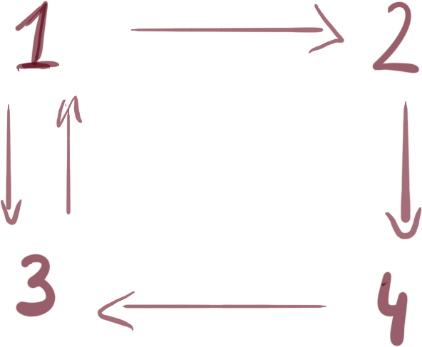

class: center, title-slide <br><br> ## CSCI-UA 480: APS ## Algorithmic Problem Solving <br/><br/><br/><br/><br/><br/><br/> ## Graphs, Part 2: Shortest Path .author[ Instructor: Joanna Klukowska <br> ] .license[ Copyright 2020 Joanna Klukowska. Unless noted otherwise all content is released under a <br> [Creative Commons Attribution-ShareAlike 4.0 International License](https://creativecommons.org/licenses/by-sa/4.0/).<br> Background image by Stewart Weiss<br>] --- layout:true template: default name: section class: inverse, middle, center --- layout:true template: default name: challenge class: challenge --- layout:true template: default name: poll class: inverse, full-height, center, middle --- layout:true template: default name: breakout class: breakout --- layout:true template:default name:slide class: slide .bottom-left[© Joanna Klukowska. CC-BY-SA.] --- ## Single Source Shortest Path (SSSP)) Task: Given a starting node, find the shortest path from that node to every other node in the graph. -- - If the graph is __unweighted__, then the shortest path between any two nodes is the one with fewest edges. The algortihm uses slightly modified BFS traversal. algorithm using the adjacency list of a graph, O(n+m) ``` visited[N] - boolean array with all values set initially to false distance[N] - distance array initialized to infinity queue - to store nodes to be visited bfs ( start ) visited [ start ] = true distance[ start ] = 0 queue.push( start ) while queue is not empty node = queue.pop for n in adj( node ) distance[ n ] = distance[node]+1 if ! visited[n] visited [n] = true queue.push( n ) ``` --- ## Shortest Path Problem Task: Given a starting node, find the shortest path from that node to every other node in the graph. - If the graph is __weighted__, then the shortest path between any two nodes is the one with smallest sum of weights along all possible paths between these two nodes. The algorithm depends on the characteristics of the wights: - are there negative weights? - are there negative cycles? --- ## Bellman-Ford Algorithm Algorithm using the edge list: ``` V = the set of all the nodes, |V|=n E = the edge list consisting of tripples {a, b, w} (nodes a, b with the edge between them of wifth w) distance[1..n] = INF //initialize the distance array to infinity x = starting vertex distance[x] = 0 for v in V for e in E distance[e.b] = min( distance[e.b], distance[e.a] + e.w ) ``` - O(nm) - works as long as the graph does not have negative cycles (negative edges are ok) - the performance can be improved by stopping as soon as there are no changes (instead of repeating the outer loop n times) ---  Apply the Bellman-Ford Algorith. Show the content of the `distance` array as it changes through the iterations (after each iteration of the outer loop). --- ## Bellman-Ford Algorithm - Negative Cycles Algorithm for detecting negative cycles: ``` 1. run Bellman-Ford algorithm n times 2. if the n+1 round reduces any paths, then the graph has a negative cycle ``` - this uses the fact that with a negative cycle the shortest path can be reduced infinitely many times; the shortest path is not meaningful --- ## Dijkstra's Algorith Algorithm using adjacency list: `adj[a]` - adjacency list containing pairs `{w,b}`: there is an edge between `a` and `b` with weight `w` <br> `distance[1..n] = INF` - initialize the distance array to infinity<br> `visited[1..n] = false` - initialize visited to false<br> `q` a priority queue containing pairs `{-d, a}` indicating that the current distance of node `a` from `x` is `d` (assumes pq is implemented using a max heap)<br> `x` - starting vertex ``` distance[x] = 0 q.push ( {0,x} ) while q is not empty {d,a} = q.pop() if visited[a] continue visited[a] = true for u in adj[a] if distance[a]+u.w < distance[u.b] distance[u.b] = distance[a] + u.w q.push( { -distance[u.b], u.b} ) ``` - O(n + m log m) - since the algorithm goes through all nodes and each node is added to the priority queue at most once - does not work if a graph contains negative edges ---  Aplly Dijkstra algorithm to the above graph. Show the content of the `distance` array after each iteration of the outer loop. --- Aplly Dijkstra algorithm to the above graph (with a single negative edge). Show the content of the `distance` array after each iteration of the outer loop. What happens? --- ## All Pairs Shortest Path Task: Find the length of the shortest path between ALL pairs of nodes in the graph. -- __Floyd-Warshall Algorithm__ creates a matrix that stores the shortest paths between all pairs of nodes. - the algorithm starts with the adjacency matrix to initialize the final matrix with values of all the edges and sets all other distances to infinity or zero - the algorithm then iterates over all nodes and uses them to _shorten_ the existing path lengths - works for directed and undirected graphs --- ## Floyd-Warshall Algorithm ``` adj[n][n] - adjacency matrix for n node graph with zero indicating that there is not edge between the nodes dist[n][n] - desired distance array for all pairs of nodes // initialize dist matrix with values of edges and infinity for i in 1..n for j in 1..n if ( i == j ) dist[i][j] = 0 else if adj[i][j] dist[i][j] = adj[i][j] else dist[i][j] = INF //shorten all paths for k = 1..n //use node k to shorten the paths for i = 1..n for j = 1..n dist[i][j] = min ( dist[i][j], dist[i][k] + dist[k][j] ) ``` .small[The innermost loop can be shortened for undirected graphs because we have symmetry in the matrix.] --- .right-column2[ ] .left-column2[ `adj[][]` matrix | | A | B | C | D | E | |---|---|---|---|---|---| | A | 0 | 1 | 0 | 7 | 3 | | B | 1 | 0 | 3 | 6 | 0 | | C | 0 | 3 | 0 | 1 | 0 | | D | 7 | 6 | 1 | 0 | 2 | | E | 3 | 0 | 0 | 2 | 0 | ] .below-column2[ Apply the algorith to the above graph. Show the content of the distance array after each iteration of the outermost loop. ] `dist[][]` matrix | | A | B | C | D | E | | --- | --- | --- | --- | --- | --- | | A | 0 | 1 | INF | 7 | 3 | | B | 1 | 0 | 3 | 6 | INF | | C | INF | 3 | 0 | 1 | INF | | D | 7 | 6 | 1 | 0 | 2 | | E | 3 | INF | INF | 2 | 0 | --- .right-column2[ ] .left-column2[ `adj[][]` matrix | | A | B | C | D | E | |---|---|---|---|---|---| | A | 0 | 1 | 0 | 7 | 3 | | B | 1 | 0 | 3 | 6 | 0 | | C | 0 | 3 | 0 | 1 | 0 | | D | 7 | 6 | 1 | 0 | 2 | | E | 3 | 0 | 0 | 2 | 0 | ] .below-column2[ Apply the algorith to the above graph. Show the content of the distance array after each iteration of the outermost loop. ] `dist[][]` matrix, k = index of node A | | A | B | C | D | E | | --- | --- | --- | --- | --- | --- | | A | 0 | 1 | INF | 7 | 3 | | B | 1 | 0 | 3 | 6 | __4__ | | C | INF | 3 | 0 | 1 | INF | | D | 7 | 6 | 1 | 0 | 2 | | E | 3 | __4__ | INF | 2 | 0 | --- .right-column2[ ] .left-column2[ `adj[][]` matrix | | A | B | C | D | E | |---|---|---|---|---|---| | A | 0 | 1 | 0 | 7 | 3 | | B | 1 | 0 | 3 | 6 | 0 | | C | 0 | 3 | 0 | 1 | 0 | | D | 7 | 6 | 1 | 0 | 2 | | E | 3 | 0 | 0 | 2 | 0 | ] .below-column2[ Apply the algorith to the above graph. Show the content of the distance array after each iteration of the outermost loop. ] `dist[][]` matrix, k = index of node B | | A | B | C | D | E | | --- | --- | --- | --- | --- | --- | | A | 0 | 1 | __4__ | 7 | 3 | | B | 1 | 0 | 3 | 6 | __4__ | | C | __4__ | 3 | 0 | 1 | __7__ | | D | 7 | 6 | 1 | 0 | 2 | | E | 3 | __4__ | __7__ | 2 | 0 | --- .right-column2[ ] .left-column2[ `adj[][]` matrix | | A | B | C | D | E | |---|---|---|---|---|---| | A | 0 | 1 | 0 | 7 | 3 | | B | 1 | 0 | 3 | 6 | 0 | | C | 0 | 3 | 0 | 1 | 0 | | D | 7 | 6 | 1 | 0 | 2 | | E | 3 | 0 | 0 | 2 | 0 | ] .below-column2[ Apply the algorith to the above graph. Show the content of the distance array after each iteration of the outermost loop. ] `dist[][]` matrix, k = index of node C | | A | B | C | D | E | | --- | --- | --- | --- | --- | --- | | A | 0 | 1 | __4__ | __5__ | 3 | | B | 1 | 0 | 3 | __4__ | __4__ | | C | __4__ | 3 | 0 | 1 | __7__ | | D | __5__ | __4__ | 1 | 0 | 2 | | E | 3 | __4__ | __7__ | 2 | 0 | --- .right-column2[ ] .left-column2[ `adj[][]` matrix | | A | B | C | D | E | |---|---|---|---|---|---| | A | 0 | 1 | 0 | 7 | 3 | | B | 1 | 0 | 3 | 6 | 0 | | C | 0 | 3 | 0 | 1 | 0 | | D | 7 | 6 | 1 | 0 | 2 | | E | 3 | 0 | 0 | 2 | 0 | ] .below-column2[ Apply the algorith to the above graph. Show the content of the distance array after each iteration of the outermost loop. ] `dist[][]` matrix, k = index of node D ... --- ## Visualizations - [Dijkstra's Shortest Path](https://www.cs.usfca.edu/~galles/visualization/Dijkstra.html) - [Floyd-Warshall All Pairs Shortest Path](https://www.cs.usfca.edu/~galles/visualization/Floyd.html) for directed and undirected graphs. --- template: challenge ## ??? Degrees of Separation <!-- UVA 821 Page Hopping --> __Six degrees of separation__ is the idea that all people are six, or fewer, social connections away from each other. Priya is a CS web minor and she just learned about creating links from one page to another. She is curious what the degree of separation for web-pages is. She wrote a proposal to one of the major search engines and they happily provided her with a list of all the links on the web-pages that their crawlers discovered. For simplicity (and because the actual web-pages are irrelevant to Priya, they converted all page web addresses to numbers). This way the list of links can be presented as pairs of integers<br> ` a b` means that page numbered `a` has a link to page numbered `b`. -- __Input__ The input consists of multiple pairs of numbers as described above. __Output__ The average number of links between web-pages (display it with 3 decimal digits). --- template: challenge __Example__ ``` 1 2 2 4 4 3 1 3 3 1 ``` .right-column2[  ] There are 12 pairs of nodes (since the direction matters). We have the following distances: - from 1 to 2, 3, and 4: 1, 1, 2 - from 2 to 1, 3, and 4: 3, 2, 1 - from 3 to 1, 2, and 4: 1, 2, 3 - from 4 to 1, 2, and 3: 2, 1, 3 The total of all distances is 22 and the average all 12 pairs is 1.833. --- --- </optgroup>